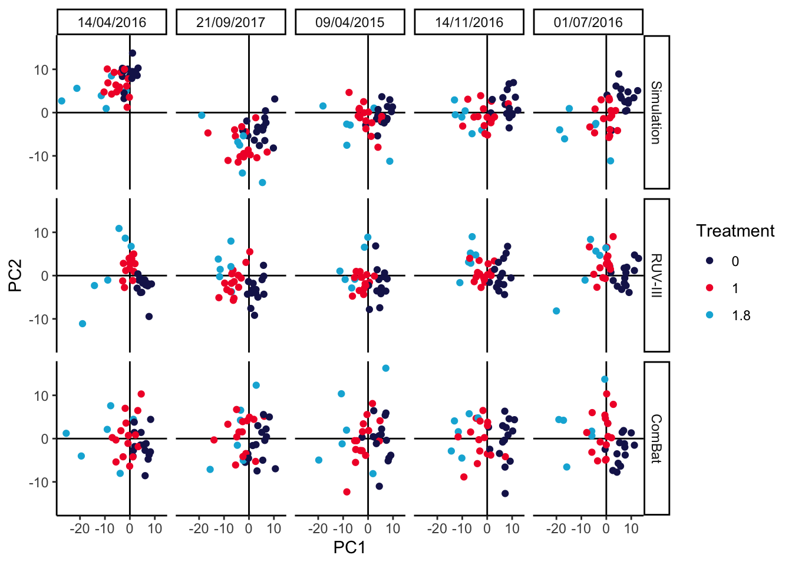

Chapter 5 Integrative Simulation
Integration can be a subtle exercise. We need to balance our interest in seeing
similarities between datasets with the risk of making things seem more similar
than they really are. Simulation can help navigate this subtlety by letting us
see how integration methods would behave in situations where we know exactly how
the different datasets are related. This note will illustrate this perspective
by showing how simulation can help with both horizontal (across batches) and
vertical (across assays) integration. We’ll have a brief interlude on the map
function in the purrr, which is helpful for concisely writing code that would
otherwise need for loops (e.g., over batches or assays).
As usual, let’s load the libraries we’ll need. Remember that instructions for
installing MIGsim and scDesigner are documented in the repository
README.
5.1 Horizontal Integration
The first example is about simultaneously analyzing several batches in a dataset about the efficiency of anaerobic digestion (AD) of organic matter. The essential problem is that, in this study, the samples could not be collected simultaneously. Small differences across separate runs could lead to systematic differences in the resulting data, which can obfuscate the more interesting between-group variation that the experiment was intended to uncover. For example, in the AD dataset, the date of the sequencing run has a global effect on measured community composition, which we can see right away from a principal components plot:
data(anaerobic)
pca_batch(anaerobic, facet = FALSE) +
scale_color_manual(values = c("#191C59", "#bc0c3c")) +
labs(col = "Treatment", shape = "Batch")
You can learn more about the general microbiome batch effect integration problem in (Wang and Le Cao, 2020), which is where this dataset example and the batch effect correction code below comes from. The article also reviews mechanisms that could lead to batch effects in microbiome data, together with methods for removing these effects and the situations within which they are most appropriate.
In batch effect correction, it’s important to remove as much of the batch variation as possible without accidentally also removing the real biological variation that would have been present even if all the samples had been sequenced together. This is sometimes called ``overintegration,’’ and this is an especially high risk if some of the real biological variation is quite subtle, e.g., a rare cell type or one that is very similar to a more prominent one. Simulation can help us gauge the extent to which different methods may or may not overintegrate. Since we get to control the between-batch and and between-biological-condition differences, we can see the extent to which integration methods can remove the former while preserving the latter.
The block below estimates a candidate simulator. By using the formula ~ batch + treatment, we’re allowing for taxon-wise differences due to batch and
treatment. Note that in principle, we could estimate an interaction between
batch and treatment (the treatment could appear stronger in some batches than
others). I encourage you to try estimating that model; however, visually
analyzing the output suggests that this full model has a tendancy to overfit.
Since the data have already been centered log-ratio transformed, we can try out
a Gaussian marginal model. The AD dataset has relatively few samples
compared to the number of features, so we’ll use a copula that’s designed for
this setting.
simulator <- setup_simulator(
anaerobic,
~ batch + treatment,
~ GaussianLSS(),
copula = copula_adaptive(thr = .1)
) |>
estimate(nu = 0.05, mstop = 100) # lower nu -> stable trainingWe can simulate from the fitted model and evaluate the quality of our fit using
contrast_boxplot. This is a light wrapper of the ggplot2 code we used to
compare experiments from our first session, and you can read its definition
here.

Exercise Propose and create at least one other visualization that can be used to compare and contrast the simulator with real data. What conclusions can you draw?
Solution: There are many possible answers:
- Boxplots across taxa with different overall abundance levels.
- Analogous histograms or CDF plots, to show the entire distributions, rather than just summarized quantiles.
- Pair scatterplots, to see how well the bivariate relationships between taxa are preserved.
- Dimensionality reduction on the simulated data, to see how well it matches global structure in the original data.
We’ll implement the last idea using PCA. This should be contrasted with the PCA plot on the original data above. It’s okay if the plot seems rotated relative to the oiginal plot – PCA is only unique up to rotation. The main characteristic we’re looking for is that the relative sizes of the batch and treatment effects seem reasonaly well-preserved, since these will be the types of effects that our later batch effect integration methods must be able to distinguish.
 :::
:::
To study the risk for overintegration, let’s imagine that there were a third
treatment group with relatively fewer samples. This is the type of group that a
correction method might accidentally blend in with the rest, if it’s too
aggressive. We’ve defined the imaginary experiment using the data.frame below.
The treatment level 1.8 is the new one. We’ve supposed there are between 1 -
3 technical replicates (extraction) for each biological sample (sample), and
the batch dates are the same as before.
## extraction batch treatment rep sample
## Min. :1 09/04/2015:36 Min. :0.0000 Min. :1.00 1 : 2
## 1st Qu.:1 14/04/2016:36 1st Qu.:0.0000 1st Qu.:1.75 2 : 2
## Median :2 01/07/2016:36 Median :1.0000 Median :2.50 3 : 2
## Mean :2 14/11/2016:36 Mean :0.7167 Mean :2.75 4 : 2
## 3rd Qu.:3 21/09/2017:36 3rd Qu.:1.0000 3rd Qu.:4.00 5 : 2
## Max. :3 Max. :1.8000 Max. :5.00 6 : 2
## (Other):168We can simulate from the new design and look at how different this new treatment group seems from the others. It’s a subtle effect, definitely smaller than the batch effect, but also separate enough that we should be able to preserve it.
p <- list()
anaerobic_sim <- sample(simulator, new_data = imaginary_design)
p[["sim"]] <- pca_batch(anaerobic_sim)We’ve defined a batch_correct wrapper function that implements either the
RUV-III or ComBat batch effect correction methods. Their outputs are contrasted
in the PCAs below. It looks like ComBat might be somewhat too aggressive,
causing the 1 and 1.8 treatment groups to substantially overlap, while RUV
is a bit more conservative, keeping the treatment groups nicely separate. As an
aside, we note that this conclusion can depend on the number of replicates and
total number of samples available. We’ve included the code for generating the
imaginary_design data.frame in a vignette
for the MIGsim package. Can you find settings that lead either method astray?
p[["ruv"]] <- pca_batch(batch_correct(anaerobic_sim, "ruv"))
p[["combat"]] <- pca_batch(batch_correct(anaerobic_sim, "combat"))
prediction_errors <- function(df, source_) {
y_hat <- predict(lda(treatment ~ PC1 + PC2, data = df), type = "response")$class
table(df$treatment, y_hat)
}
map(p, ~ prediction_errors(.$data))## $sim
## y_hat
## 0 1 1.8
## 0 62 13 0
## 1 15 56 4
## 1.8 1 14 15
##
## $ruv
## y_hat
## 0 1 1.8
## 0 70 5 0
## 1 2 67 6
## 1.8 0 8 22
##
## $combat
## y_hat
## 0 1 1.8
## 0 65 10 0
## 1 12 59 4
## 1.8 1 12 175.2 Interlude: Using map
In the examples below, we’ll find it helpful to use the function map in the
purrr package. This function gives a one-line replacement for simple for-loops;
it is analogous to list comprehensions in python. It can be useful many places
besides the topic of this tutorial. For example, if we want to convert the
vector c(1, 2, 3) into c(1, 4, 9), we can use this map:
## [[1]]
## [1] 1
##
## [[2]]
## [1] 4
##
## [[3]]
## [1] 9The ~ notation is shorthand for defining a function, and the . represents
the current vector element. More generally, we can apply map to lists. This
line will update the list so that 1 is added to each element.
## $a
## [1] 2
##
## $b
## [1] 3
##
## $c
## [1] 4Exercise: To test your understanding, can you write a map that computes the
*mean for each
vector in the list x below? What about the mean of the 10 smallest elements?
Solution:
## $a
## [1] -0.04524557
##
## $b
## [1] 1.0684## $a
## [1] -1.915257
##
## $b
## [1] -0.40882335.3 Vertical Integration
In horizontal integration, we have many datasets, all with the same features. They only differ because they were gathered at different times. In contrast, for vertical integration, we instead have many datasets all with the same samples. They differ because they measure different aspects of those samples. Our goal in this situation is not to remove differences across datasets, like it was in horizontal integration, but instead to clarify the relationships across sources.
One important question that often arises in vertical integration is – are the data even alignable? That is, in our effort to look for relationships across datasets, we might accidentally miss out on interesting variation that exists within the individual assays. If the technologies are measuring very different things, we might be better off simply analyzing the data separately. To help us gauge which setting we might be in, we can simulate data where we know that we shouldn’t align the sources. If our integration methods are giving similar outputs as they give on this simulated data, then we should be more cautious.
There are a few ways in which a dataset might not be ``alignable.’’ The most general reason is that there may be no latent sources of variation in common between the sources. A simpler reason is that something that influenced one assay substantially (e.g., disease state) might not influence the other by much. Let’s see how an integration method might work in this setting.
We’ll work with the ICU sepsis dataset previously studied by Haak et al. (2021) and documented within a vignette for the MOFA package. The three datasets here are 16S bacterial, ITS fungal, and Virome assays, all applied to different healthy and sepsis patient populations. Moreover, some participants were on a course of antibiotics while others were not. The question is how either sepsis, antibiotics, or their interaction affects the microbiome viewed through these three assays. The data are printed below, they have already been filtered and CLR transformed following the MOFA vignette.
## $Bacteria
## class: SummarizedExperiment
## dim: 180 57
## metadata(0):
## assays(1): clr
## rownames(180): Acidaminococcus Actinomyces ... Veillonellaceae Weissella
## rowData names(0):
## colnames(57): TKI_F1 TKI_F10 ... TKI_F8 TKI_F9
## colData names(16): Age Sexs ... Propionate Butyrate
##
## $Fungi
## class: SummarizedExperiment
## dim: 18 57
## metadata(0):
## assays(1): clr
## rownames(18): Agaricus Aspergillus ... Sclerotiniaceae Vishniacozyma
## rowData names(0):
## colnames(57): TKI_F1 TKI_F10 ... TKI_F8 TKI_F9
## colData names(16): Age Sexs ... Propionate Butyrate
##
## $Viruses
## class: SummarizedExperiment
## dim: 42 57
## metadata(0):
## assays(1): clr
## rownames(42): Acidovorax phage Acinetobacter phage ... Streptomyces phage Vibrio phage
## rowData names(0):
## colnames(57): TKI_F1 TKI_F10 ... TKI_F8 TKI_F9
## colData names(16): Age Sexs ... Propionate ButyrateWe can simultaneously analyze these data sources using block sPLS-DA. This is
the multi-assay version of the analysis that we saw in the previous session.
exper_splsda is a very light wrapper of a mixOmics function call, which you
can read
here.
The output plot below shows that each assay differs across groups, and this is
quantitatively summarized by the high estimated weights between each category
and the estimated PLS directions.

## comp1 comp2
## Bacteria 0.8580402 0.8191458
## Fungi 0.6513668 0.4845247
## Viruses 0.6118091 0.8047067How would the output have looked if 16S community composition had not been related to disease or antibiotics groups? Since integrative analysis prioritizes similarities across sources, we expect this to mask some of the real differences in the fungal and virus data as well. We can use simulation to gauge the extent of this masking.
Our first step is to train a simulator. We’re just learning four different
setes of parameters for each of the four observed groups. This is not as nuanced
as learning separate effects for sepsis and antibiotics, but it will be enough
for illustration. We have used map to estimate a simulator for each assay in
the icu list.
So far, we haven’t tried removing any relationships present in the 16S assay, and indeed our integrative analysis output on the simulated data looks comparable to that from the original study.
icu_sim <- join_copula(simulator, copula_adaptive()) |>
sample() |>
split_assays()
fit_sim <- exper_splsda(icu_sim)
plotIndiv(fit_sim)
## comp1 comp2
## Bacteria 0.8580402 0.8191458
## Fungi 0.6513668 0.4845247
## Viruses 0.6118091 0.8047067Exercise: Modify the simulator above so that the 16S group no longer depends on disease cateogry. This will allow us to study how the integrative analysis output changes when the data are not alignable.
Solution: We need to define a new link that no longer depends on Category. One solution
is to modify the existing simulator in place using mutate.
Since we are modifying all taxa, a simpler solution is to just define a new simulator from scratch.
We can rerun the integrative analysis using the modified simulator. Somewhat surprisingly, the disease association in the bacteria group hasn’t been erased. This is an artifact of the integration. The other assays have associations with disease group, and since the method encourages outputs across tables to be consistent with one another, we have artificially introduced some structure into the bacteria visualization (even if it is quite weak.) Nonetheless, we still observe a large dropoff in weight for the bacterial table. Further, there seems to be a minor deterioration in the group separations for the fungal and virus communities, and the component weights are higher when we work with only the fungal and virus assays. Altogether, this suggests that we may want to check table-level associations with the response variable, especially if any of the integration outputs are ambiguous. In this case, we might be able to increase power by focusing only on class-associated assays. Nonetheless, the block sPLS-DA also seems relatively robust – considering the dramatic change in the microbiome table, the output for the remaining tables still surfaces interesting relationships.
icu_sim <- join_copula(null_simulator, copula_adaptive()) |>
sample() |>
split_assays()
fit_null <- exper_splsda(icu_sim)
plotIndiv(fit)
## comp1 comp2
## Bacteria 0.5886651 0.6873822
## Fungi 0.7647532 0.6900530
## Viruses 0.6284801 0.7759833


## R version 4.4.0 (2024-04-24)
## Platform: aarch64-apple-darwin20
## Running under: macOS Ventura 13.4
##
## Matrix products: default
## BLAS: /Library/Frameworks/R.framework/Versions/4.4-arm64/Resources/lib/libRblas.0.dylib
## LAPACK: /Library/Frameworks/R.framework/Versions/4.4-arm64/Resources/lib/libRlapack.dylib; LAPACK version 3.12.0
##
## locale:
## [1] en_US.UTF-8/en_US.UTF-8/en_US.UTF-8/C/en_US.UTF-8/en_US.UTF-8
##
## time zone: Australia/Melbourne
## tzcode source: internal
##
## attached base packages:
## [1] splines parallel stats4 stats graphics grDevices utils datasets methods base
##
## other attached packages:
## [1] TreeSummarizedExperiment_2.12.0 Biostrings_2.72.1 XVector_0.44.0 SingleCellExperiment_1.26.0
## [5] scDesigner_0.0.0.9000 MIGsim_0.0.0.9000 tidyr_1.3.1 tibble_3.2.1
## [9] scico_1.5.0 purrr_1.0.2 patchwork_1.2.0 mixOmics_6.28.0
## [13] lattice_0.22-6 MASS_7.3-60.2 glue_1.7.0 ggplot2_3.5.1
## [17] ggdist_3.3.2 gamboostLSS_2.0-7 mboost_2.9-10 stabs_0.6-4
## [21] forcats_1.0.0 dplyr_1.1.4 SummarizedExperiment_1.34.0 Biobase_2.64.0
## [25] GenomicRanges_1.56.0 GenomeInfoDb_1.40.0 IRanges_2.38.0 S4Vectors_0.42.0
## [29] BiocGenerics_0.50.0 MatrixGenerics_1.16.0 matrixStats_1.3.0 SpiecEasi_1.1.3
## [33] CovTools_0.5.4
##
## loaded via a namespace (and not attached):
## [1] minpack.lm_1.2-4 XML_3.99-0.16.1 rpart_4.1.23 lifecycle_1.0.4 Rdpack_2.6
## [6] edgeR_4.2.0 doParallel_1.0.17 MultiAssayExperiment_1.30.2 insight_0.20.1 magrittr_2.0.3
## [11] limma_3.60.2 sass_0.4.9 rmarkdown_2.27 jquerylib_0.1.4 yaml_2.3.8
## [16] DBI_1.2.3 RColorBrewer_1.1-3 ADGofTest_0.3 abind_1.4-5 zlibbioc_1.50.0
## [21] expm_0.999-9 quadprog_1.5-8 pspline_1.0-20 kde1d_1.0.7 rgl_1.3.1
## [26] yulab.utils_0.1.4 pracma_2.4.4 sva_3.50.0 GenomeInfoDbData_1.2.12 ggrepel_0.9.5
## [31] tidytree_0.4.6 genefilter_1.86.0 ellipse_0.5.0 RSpectra_0.16-1 annotate_1.82.0
## [36] codetools_0.2-20 DelayedArray_0.30.1 shapes_1.2.7 tidyselect_1.2.1 shape_1.4.6.1
## [41] UCSC.utils_1.0.0 farver_2.1.2 randtoolbox_2.0.4 base64enc_0.1-3 jsonlite_1.8.8
## [46] Formula_1.2-5 survival_3.7-0 iterators_1.0.14 systemfonts_1.1.0 foreach_1.5.2
## [51] tools_4.4.0 progress_1.2.3 treeio_1.28.0 ragg_1.3.2 Rcpp_1.0.12
## [56] rARPACK_0.11-0 BiocBaseUtils_1.6.0 gridExtra_2.3 SparseArray_1.4.8 mgcv_1.9-1
## [61] xfun_0.44 distributional_0.4.0 withr_3.0.0 numDeriv_2016.8-1.1 fastmap_1.2.0
## [66] fansi_1.0.6 digest_0.6.35 R6_2.5.1 textshaping_0.4.0 colorspace_2.1-0
## [71] RSQLite_2.3.7 inum_1.0-5 copula_1.1-3 flare_1.7.0.1 utf8_1.2.4
## [76] generics_0.1.3 corpcor_1.6.10 prettyunits_1.2.0 pulsar_0.3.11 httr_1.4.7
## [81] htmlwidgets_1.6.4 S4Arrays_1.4.1 scatterplot3d_0.3-44 rngWELL_0.10-9 pkgconfig_2.0.3
## [86] geigen_2.3 gtable_0.3.5 blob_1.2.4 pcaPP_2.0-4 htmltools_0.5.8.1
## [91] bookdown_0.39.1 ruv_0.9.7.1 scales_1.3.0 SHT_0.1.8 png_0.1-8
## [96] knitr_1.47 rstudioapi_0.16.0 reshape2_1.4.4 nlme_3.1-164 cachem_1.1.0
## [101] stringr_1.5.1 libcoin_1.0-10 AnnotationDbi_1.66.0 pillar_1.9.0 grid_4.4.0
## [106] vctrs_0.6.5 VGAM_1.1-11 huge_1.3.5 xtable_1.8-4 gamlss.dist_6.1-1
## [111] evaluate_0.23 mvtnorm_1.2-5 cli_3.6.2 locfit_1.5-9.9 compiler_4.4.0
## [116] rlang_1.1.4 crayon_1.5.2 labeling_0.4.3 plyr_1.8.9 fs_1.6.4
## [121] stringi_1.8.4 BiocParallel_1.38.0 nnls_1.5 assertthat_0.2.1 rvinecopulib_0.6.3.1.1
## [126] munsell_0.5.1 gsl_2.1-8 lazyeval_0.2.2 glmnet_4.1-8 Matrix_1.7-0
## [131] hms_1.1.3 stabledist_0.7-1 bit64_4.0.5 KEGGREST_1.44.0 statmod_1.5.0
## [136] highr_0.11 rbibutils_2.2.16 partykit_1.2-20 igraph_2.0.3 memoise_2.0.1
## [141] bslib_0.7.0.9000 bit_4.0.5 ape_5.8